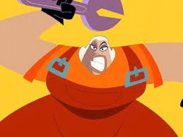

Jimmy Toutain & Alexis Escobar
Lycée Albert Londres
Eric Judor
Razmo, doublé par Eric Judor est un petit rat rondouillard en combinaison bleue de mécanicien, expert en mécanique, qui a inventé les rat-boards
Éric Judor, parfois simplement appelé Éric, est un acteur, réalisateur, scénariste et humoriste français, né le 25 juillet 1968 à Meaux. Il accède à la notoriété en formant, avec Ramzy Bedia, le duo comique Éric et Ramzy.
Ramzy Bedia
Rapido est un grand rat habillé d'un pantalon noir, d'un tee-shirt blanc et d'une veste rouge. Lui est prétentieux, frondeur, mais peureux.
Ramzy Bedia, parfois simplement appelé Ramzy, est un acteur et humoriste français, né le 10 mars 1972 à Paris. Il accède à la notoriété en formant, avec Éric Judor, le duo comique Éric et Ramzy.
Sylvia Bergé
Svetlana est une ancienne miss monde, elle travaille depuis des années au service du capitaine en tant que mécanicienne. Elle est dotée d'une force herculéenne qui lui permet de porter quasiment tous les objets.
Sylvia Bergé, née le 21 décembre 1962, est une comédienne française, sociétaire de la Comédie Française également active dans la chanson et le doublage.
Max André
Amateur de golf, ce vieux capitaine écossais à la barbe blanche est le seul à connaître les destinations de son bateau, d'après Benny, dans L'année du rat, il serait né en 1937.
Max André, est un acteur et directeur artistique français, né le 1er août 1938 à Paris et mort le 10 novembre 2020 en France. Actif dans le doublage, il a notamment été la voix française la plus régulière de Ron Rifkin. Il était ami avec l'acteur Daniel Beretta.
Emmanuel Garijo
Benny est le cuisinier du bateau et il est asiatique. Bien qu'il ait étudié la cuisine, il ne prépare que des plats à base de fromage, des sushis et des soufflés, ou encore des plats plus douteux.Il est allergique aux produits laitiers. Il a aussi des talents de ninja. Il frise la stupidité et complote souvent avec Svetlana.
Emmanuel Garijo est un acteur français. Très actif dans le doublage.